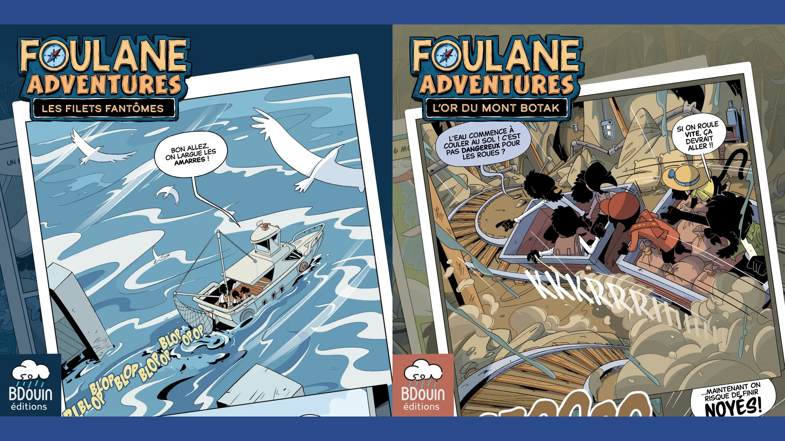
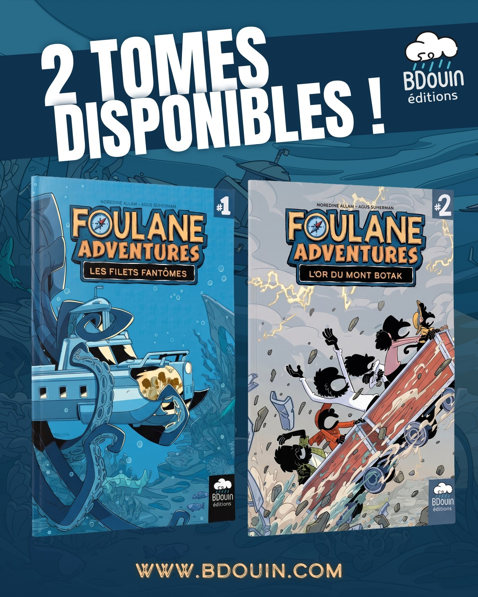
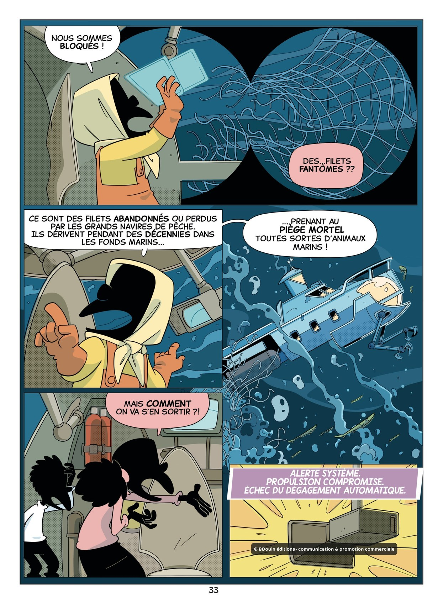
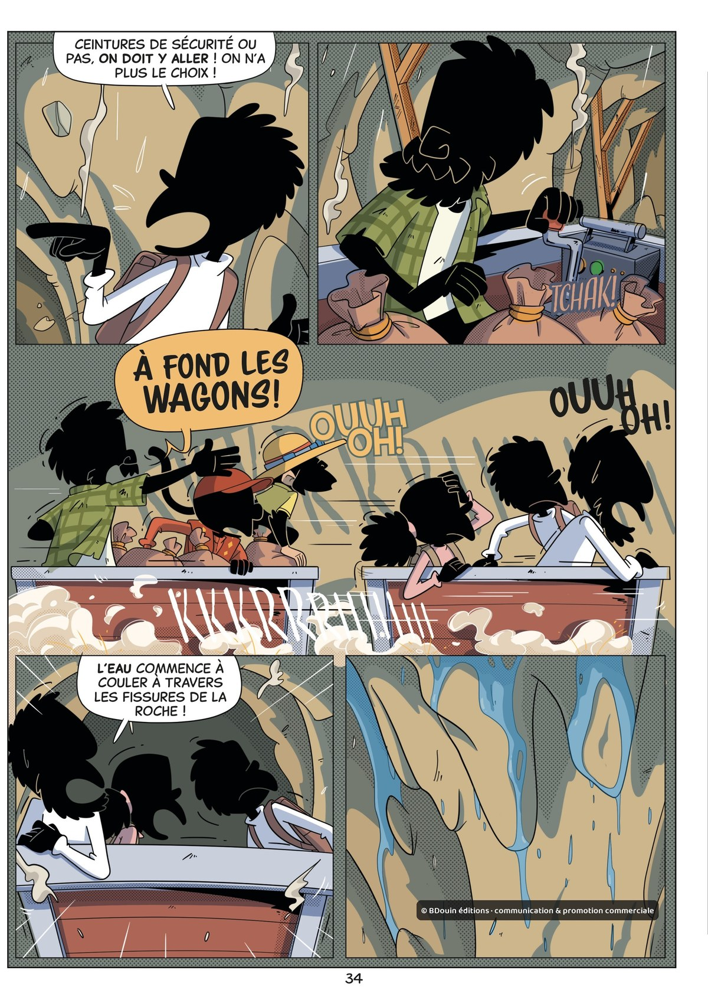

De Picsou à Foulane Adventures
Assalam'alaykum et bonjour,
Nous avons grandi avec la bande dessinée, bien avant les tablettes et les heures perdues sur les réseaux. Des comics américains (notre regard sur eux a bien changé depuis), des albums franco-belges, et surtout Picsou.
Les Picsou, c'est notre mère qui nous les achetait en brocante, à petit prix. On découvrait les histoires avec quelques années de retard, mais pour nous elles étaient neuves. On les lisait, on les relisait, en attendant la prochaine trouvaille.
On n'imaginait pas qu'un jour on éditerait nous-mêmes des histoires d'aventure.

Quand on a commencé à faire nos propres livres, l'envie était restée : écrire les aventures qu'on aurait aimé lire gamins. Des histoires drôles et mouvementées, mais avec notre univers et nos valeurs. C'est comme ça qu'est né Foulane Adventures.
Dans le tome 1, Les Filets fantômes, la famille Foulane prend la mer, et rien ne se passe comme prévu.

Dans le tome 2, L'Or du mont Botak, on les a envoyés en Indonésie. Changement de décor, mais pas de répit.

Norédine Allam au scénario, Agus Suherman au dessin.
Aujourd'hui, ce sont nos histoires qui sont imprimées. Peut-être qu'un gamin les lira et les relira à son tour, comme nous avec nos Picsou de brocante.
Les deux tomes sont disponibles depuis mercredi.